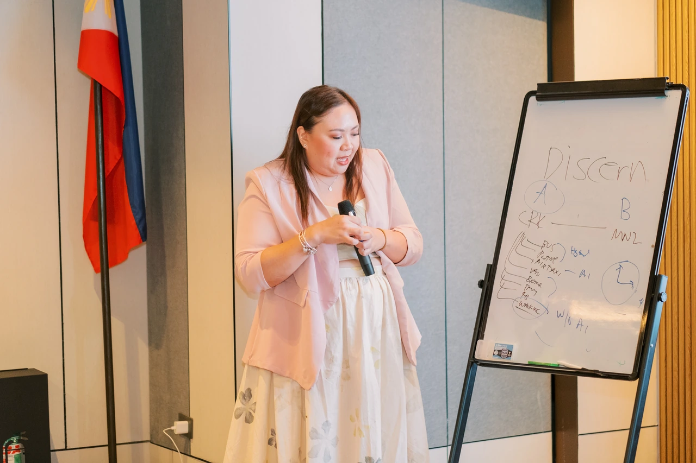

About · Founder of the Faith Works ecosystem
Faith
Natividad
- AI strategist
- Entrepreneur
- Speaker
- Content creator
Faith builds the bridge between people and AI. Through education, implementation, media and community, she helps professionals and organizations become future-ready, without asking them to become tech experts.

Her story
A multi-passionate entrepreneur with one focus: people who are ready for what comes next.
Faith Natividad is an AI strategist, international keynote speaker, content creator and the founder of the Faith Works ecosystem: an AI-powered platform that brings together education, AI implementation, media, community and content production.
Recognized as one of the Top 40 Filipino Founders on LinkedIn, she has helped facilitate the placement of more than 1,000 Filipino professionals across six continents, supported over 200 local and global clients, and educated nearly 5,000 students, CEOs, founders, executives and professionals in AI literacy, prompt engineering, automation and digital transformation.
Her work connects learning, leadership and practical implementation. As an AI business coach and future-of-work strategist, she helps non-technical leaders and teams move from curiosity to a working result, one real business task at a time.
Executive education
Prompt Engineering and AI Digitalization at the Asian Institute of Management (AIM), and through the University of Sydney’s Centre for Continuing Education (CCE).
- Top 40
- Filipino Founders on LinkedIn
- 1,000+
- Filipino professionals placed across six continents
- 200+
- Local and global clients supported
- ~5,000
- Students, leaders and professionals educated in AI literacy
- 4
- Countries for keynotes: Australia, New Zealand, Taiwan, Singapore
The mission
My mission is to help people and organizations become future-ready by transforming knowledge into action, technology into impact, and operators into orchestrators.
Faith Natividad, Founder
The vision
A First-World Philippines, powered by AI-empowered Filipinos.

Speaking
Keynotes on AI, leadership and the future of work.
Faith has delivered keynote talks and workshops in Australia, New Zealand, Taiwan and Singapore, sharing practical insight on artificial intelligence, leadership, entrepreneurship, business transformation and the future of work.
- AI for Business Growth
- Operator to Orchestrator
- AI Literacy for Leaders
- Future of Work
- Prompt Engineering
- Business Systems & Automation
- Scaling Through AI & Human Talent
- Personal Branding in the AI Era
One mission, five brands
The Faith Works ecosystem
Faith Works PH is the main education, workshops, coaching and strategy brand. Around it, each brand has its own role in helping people work better with AI.
-

Learn
Education, strategy, leadership development and long-term business growth, through workshops, coaching and programs.
Learn AI -

Implement
AI literacy, automation, AI implementation and technology solutions for business, starting with a discovery conversation about your use case.
About Faith AI -
Faith Talks
Converse
Storytelling, a podcast and meaningful conversations: real-life lessons and future-ready insights.
-

Connect
Connection, collaboration, mentorship and growth for founders, entrepreneurs, professionals and emerging leaders, who keep learning and applying between sessions.
The community -
Faith Studio
Create
Content production, campaigns and creative storytelling that power the ecosystem and its advocacy.
Digital GrowthScale is a separate implementation and staffing business. Inquiries for those services are referred to it with a clear handoff, and its results are not presented as Faith Works results.
Our approach
Before AI tools, upgrade the human.
Better judgment, clarity and work habits come first. Tools change; the way you think about your work lasts.
For non-technical founders, professionals and teams who feel overwhelmed by tools, Faith Works provides practical learning and guided implementation that turns one business task into a useful, reviewable workflow.
- Learnthe foundations.
- ApplyAI to a real task.
- Builda useful first version.
- Implementit in your work.
- Improveit through feedback and results.
Our promise
How we teach and what we promise
Practical, honest and specific. These rules apply to every program, page and email.
- We explain the outcome before we name a tool.
- We say what each program costs, includes and leaves out.
- We label examples as examples, and keep learning prototypes separate from supported systems.
- We never promise income, instant mastery or guaranteed results.
- We show participant feedback only with their permission and their exact words.
Start with one useful workflow
Start your AI journey with the free AI Workflow Starter Kit, or bring Faith Works to your team.